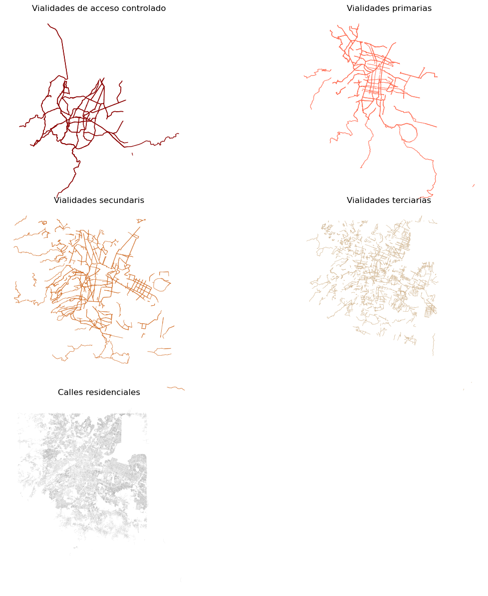
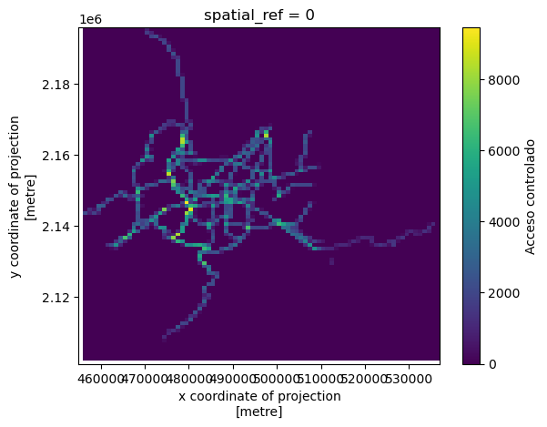
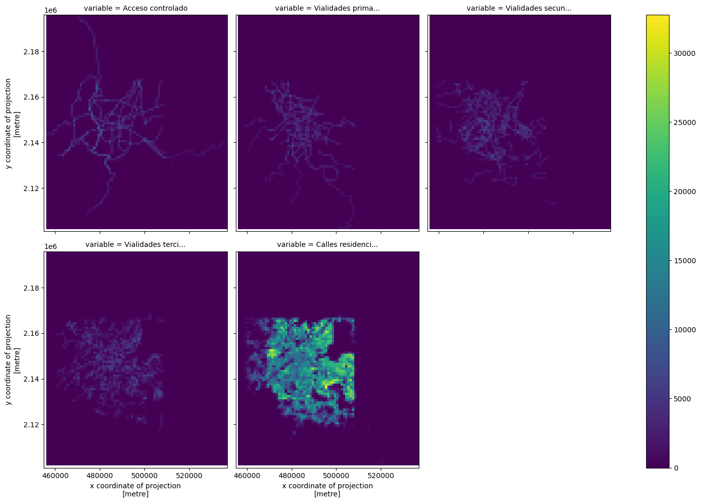

import matplotlib.pyplot as plt
import geopandas as gpd
from pyLandUseMX.descargas import *
from pyLandUseMX.usodesuelo import *Agregación de vialidades
En este tutorial vamos a usar el módulo
coberturas para agregar la red vial de la CDMX en una retícula.
Importamos los que vamos a necesitar
red = gpd.read_file("datos/descargas/red_zmvm.gpkg")
# zmvm = gpd.read_file("datos/descargas/silhuetas.shp.zip")
# zmvm = zmvm.loc[zmvm.CVE_SUN == '13']
# red = red.sjoin(zmvm.to_crs(red.crs))id_acceso_c = [100, 101, 102, 103, 104, 105]
id_primarias = [106, 107]
id_secundarias = 108
id_terciarias = 109
id_residencial = 110acceso_controlado = red.loc[red.tag_id.isin(id_acceso_c)]
primarias = red.loc[red.tag_id.isin(id_primarias)]
secundarias = red.loc[red.tag_id == id_secundarias]
terciarias = red.loc[red.tag_id == id_terciarias]
residenciales = red.loc[red.tag_id == id_residencial]mapas = {
"Vialidades de acceso controlado": {
"datos":acceso_controlado,
"color": "darkred",
"peso": 1},
"Vialidades primarias": {
"datos":primarias,
"color": "tomato",
"peso": 0.8},
"Vialidades secundaris": {
"datos":secundarias,
"color": "chocolate",
"peso": 0.6},
"Vialidades terciarias": {
"datos":terciarias,
"color": "tan",
"peso": 0.5},
"Calles residenciales": {
"datos":residenciales,
"color": "black",
"peso": 0.02},
}fig, axs = plt.subplots(3,2,figsize=(15, 15))
axs = axs.ravel()
for i, (k,v) in enumerate(mapas.items()):
ax = v['datos'].plot(ax=axs[i], linewidth=v['peso'], color=v['color'])
ax.set_title(k)
ax.axis('off')
fig.delaxes(axs[-1])
plt.subplots_adjust(wspace=0, hspace=0)
# plt.tight_layout(pad=0.05)
malla = (Malla
.desde_capa(red, 1000)
.agrega_lineas(acceso_controlado, campo='Acceso controlado')
.agrega_lineas(primarias, campo='Vialidades primarias')
.agrega_lineas(secundarias, campo='Vialidades secundarias')
.agrega_lineas(terciarias, campo='Vialidades terciarias')
.agrega_lineas(residenciales, campo='Calles residenciales'))malla.datos| grid_id | geometry | Acceso controlado | Vialidades primarias | Vialidades secundarias | Vialidades terciarias | Calles residenciales | |
|---|---|---|---|---|---|---|---|
| 0 | 0 | POLYGON ((455987.604 2101522.619, 456987.604 2... | 0.0 | 0.0 | 0.0 | 0.0 | 0.0 |
| 1 | 1 | POLYGON ((455987.604 2102522.619, 456987.604 2... | 0.0 | 0.0 | 0.0 | 0.0 | 0.0 |
| 2 | 2 | POLYGON ((455987.604 2103522.619, 456987.604 2... | 0.0 | 0.0 | 0.0 | 0.0 | 0.0 |
| 3 | 3 | POLYGON ((455987.604 2104522.619, 456987.604 2... | 0.0 | 0.0 | 0.0 | 0.0 | 0.0 |
| 4 | 4 | POLYGON ((455987.604 2105522.619, 456987.604 2... | 0.0 | 0.0 | 0.0 | 0.0 | 0.0 |
| ... | ... | ... | ... | ... | ... | ... | ... |
| 7609 | 7609 | POLYGON ((535987.604 2190522.619, 536987.604 2... | 0.0 | 0.0 | 0.0 | 0.0 | 0.0 |
| 7610 | 7610 | POLYGON ((535987.604 2191522.619, 536987.604 2... | 0.0 | 0.0 | 0.0 | 0.0 | 0.0 |
| 7611 | 7611 | POLYGON ((535987.604 2192522.619, 536987.604 2... | 0.0 | 0.0 | 0.0 | 0.0 | 0.0 |
| 7612 | 7612 | POLYGON ((535987.604 2193522.619, 536987.604 2... | 0.0 | 0.0 | 0.0 | 0.0 | 0.0 |
| 7613 | 7613 | POLYGON ((535987.604 2194522.619, 536987.604 2... | 0.0 | 0.0 | 0.0 | 0.0 | 0.0 |
7614 rows × 7 columns
rasters = malla.to_xarray()rasters<xarray.Dataset>
Dimensions: (y: 95, x: 82)
Coordinates:
* y (y) float64 2.102e+06 2.102e+06 ... 2.196e+06
* x (x) float64 5.365e+05 5.355e+05 ... 4.555e+05
spatial_ref int64 0
Data variables:
Acceso controlado (y, x) float64 nan nan nan nan ... 0.0 0.0 0.0 nan
Vialidades primarias (y, x) float64 nan nan nan nan ... 0.0 0.0 0.0 nan
Vialidades secundarias (y, x) float64 nan nan nan nan ... 0.0 0.0 0.0 nan
Vialidades terciarias (y, x) float64 nan nan nan nan ... 0.0 0.0 0.0 nan
Calles residenciales (y, x) float64 nan nan nan nan ... 0.0 0.0 0.0 nanrasters['Acceso controlado'].plot()<matplotlib.collections.QuadMesh>
(rasters
.to_array()
.plot(col = 'variable', col_wrap=3, figsize=(15, 10)))<xarray.plot.facetgrid.FacetGrid>